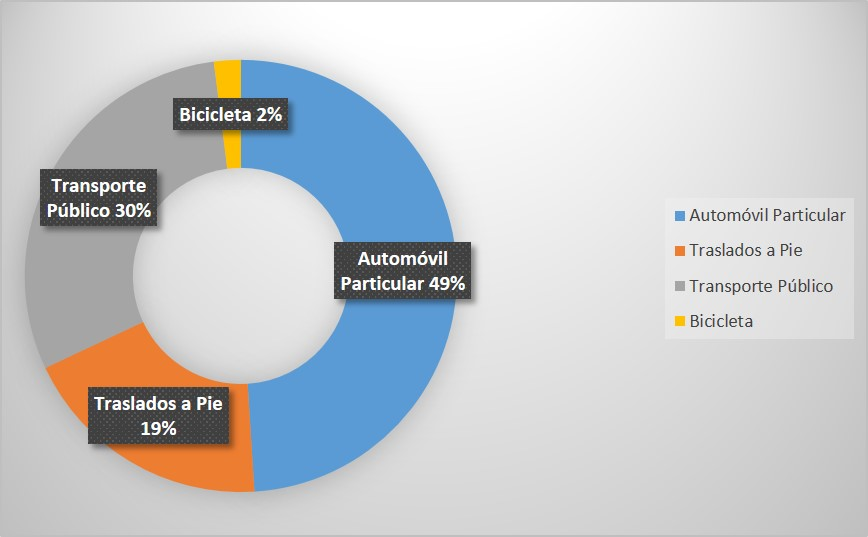
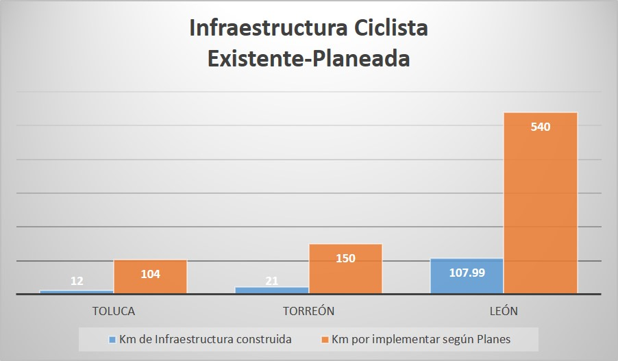
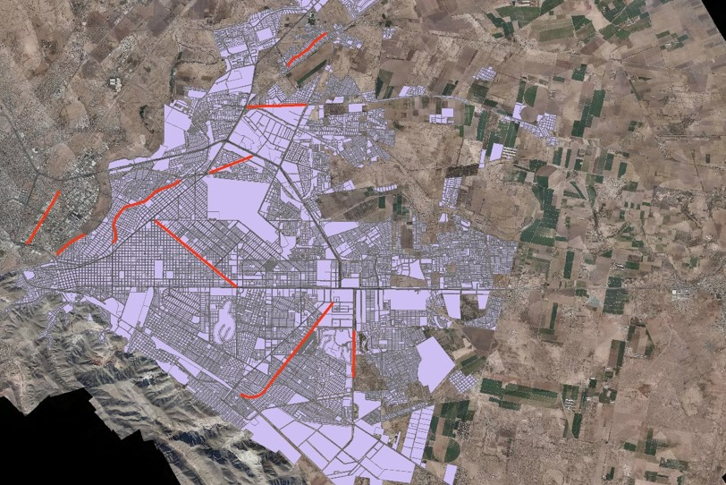

En la actualidad contar con estrategias para lograr una ciudad sustentable es prioridad dentro de la planificación urbana, una de las formas de conseguir esta meta es impulsando la movilidad activa.
El ciclismo es uno de los medios de desplazamiento de la movilidad activa, así como lo es el traslado a pie. Hoy en día en distintas ciudades tanto nacionales como internacionales existe un creciente desarrollo de planes y estrategias que permitan incrementar el uso de la bicicleta.
En los municipios de Torreón y Matamoros se realizan 1´818,955 viajes diarios, dentro de los cuales el 19% corresponde a los traslados a pie y el 2% a los viajes en bicicleta. El desarrollo de un Plan Estratégico de Movilidad Activa deberá considerar estrategias que ayuden al aumento de este porcentaje en la región, teniendo como puntos importantes: la infraestructura, intermodalidad y la difusión para fomentar el uso de este transporte.
La inversión en infraestructura ciclista durante los años 2013, 2014 y 2015 en la Zona Metropolitana de La Laguna fue del 0%, una gran diferencia contra el 87% hecho en infraestructura vehicular de acuerdo al diagnóstico de inversión en movilidad en las zonas metropolitanas de México 2011-2015, hecho por el Instituto de Políticas para el Transporte y el Desarrollo (ITDP por sus siglas en inglés).
La existencia de la infraestructura es un factor de gran importancia para que las personas elijan usar la bicicleta como medio de transporte. En Torreón se cuenta con 8 vialidades con infraestructura para el uso de la bicicleta, de diferente tipología, con un total de 21 kilómetros de longitud.
Sin embargo estas vialidades no cuentan con las condiciones óptimas, ya que algunas de ellas tienen deficiencias en cuanto a la señalización horizontal, en algunos casos se encuentra deteriorada, ilegible o inexistente. La delimitación de las mismas llega a ser un riesgo, con tramos abiertos para los accesos vehiculares que provocan la invasión del carril por parte de automovilistas y/o su uso como estacionamiento. La señalización vertical es escasa o inexistente y las condiciones de la superficie de rodamiento son malas y presentan dificultades para los ciclistas.
La mayoría de estas rutas ciclistas presentan alguna deficiencia y en algunos de los casos no fueron diseñadas siguiendo los lineamientos nacionales e internacionales. Es por eso que llegan a presentar un alto riesgo de accidentes para los usuarios.
Un buen ejemplo en infraestructura ciclista es la ciclovía recién construida y aún en proceso, que recorre la carretera Torreón-Matamoros, iniciando en el límite de Torreón y Matamoros. Recorre los ejidos que se encuentran al pie de carretera, llegando a la entrada a la ciudad de Matamoros. Cuenta con señalamiento vertical, carril delimitado físicamente y señalización horizontal.
Es importante destacar que las rutas existentes en la ciudad son tramos dispersos, es decir no existe ninguna conexión entre ellas, inician en algún punto de la vialidad y terminan en otro extremo, dejando al ciclista sin más opciones de rutas para llegar a su destino.
En el Ranking de Ciclociudades Torreón-La Laguna obtuvo el lugar 7 de 30 entidades en 2015. Actualmente el IMPLAN desarrolla el Plan de Movilidad Activa en el cual propone una red ciclista que conecte la infraestructura existente y también implemente la infraestructura ciclista en la ciudad con ciclovías proyectadas a corto, mediano y largo plazo, con un aproximado de 150 kilómetros, incrementando en un futuro, 7 veces más la infraestructura existente.
Un ejemplo de los buenos resultados que se pueden obtener de un plan de movilidad es la ciudad de Sevilla, que es punto de referencia en movilidad ciclista, y que gracias a las estrategias políticas y planes logró aumentar su infraestructura de 12 Km en 2006 a 120 Km para el 2011, es decir un incremento multiplicado por diez.
El Plan de Movilidad Activa responde a las necesidades de esta ciudad, propone la implementación de su infraestructura ciclista, al igual que otras ciudades mexicanas como Toluca y León lo han hecho dentro de sus planes.



